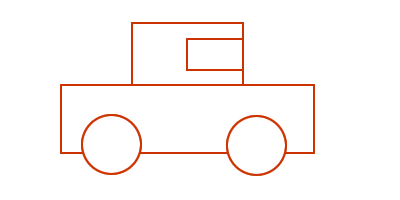

参考所有同好成果总结而得

本命年

(^.^)
- 每日可承载文件安全查询30亿次以上,可同时并发接受200万个文件的安全查询;平均每文件完成鉴定<0.2秒;任意新增病毒样本将在一分钟之内完成鉴定,使全体用户获得免疫!
- 每日可承载网址安全查询10亿次,可同时并发接受20万个可疑网址的查询;平均每网页分析完成<0.03秒;任意新增恶意网址能在90秒之内完成分析,使全体用户获得免疫!
- 自动化同步金山云安全各类特征库,在客户端本地通过黑+白特征库,实时识别98%以上的常见/热点病毒;
- 自动化向金山云安全平台提交查询,进一步在黑+白特征全库中,及时确认最新病毒/恶意网址;
- 自动化上报最新可疑文件/网址,在金山云安全平台完成自动化鉴定,实时发布,从而形成一人发现全体免疫的全网实时病毒监察的云安全态势!
社区
| 版本1型车 | 版本2型车 |
|  |  |
| 模块1关注的 | 其它各模块开发关注的 |
 |
 |
重现性
可追踪
差异报告

Q&A


 ~ 文学化编辑环境
~ 文学化编辑环境
| 反馈: | Zoom.Quiet@gmail.com |
|---|---|
| 查阅: | http://code.ijinshan.com/res/s5/110110-YY-DVCS |